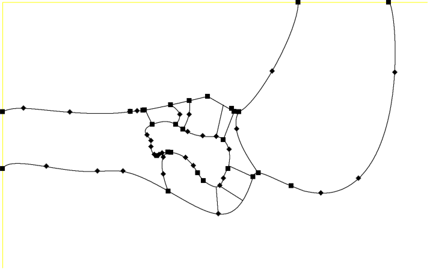

With me doing this project were Ólafur Kári Melville and Guðrún Guðnadóttir.
See the project
website.
Waterfall Table
Do to COVID-19 we were not able to make the table. Hopefully we will be able to someday.
My Group
My Work
Since I had been thinking about doing a table like this for some time, I took the role of designing the table. I desided to make a replica of a waterfall from an area that's close to my heart called Hjálparfoss or Help Fall in English. It is located in a valley called Þjórsárdalur in southern Iceland and my mother grew up close by.
The idea was to use a CNC milling machine to carve out the river path and the waterfall. Then use epoxy resin to make the river itself.
I had a picture of the waterfall from above that I used to help me, along with photos from Google.
From that I sketched a 2d version on a piece of paper.
Then I redrew that sketch in Inventor.

Then step by step, I extruded parts of the sketch to make the river bed.
Then I added a wood appearance to see how it would look after milling.
And then to a get a feel for the river, I put a blue appearance on the bottom of the river to see how it might turn out.
Then I started drawing the legs, for reference I found legs online and using those as a refrence I made them 44x44x400 mm in size. And then put slots at the top of them to put fastening pins, like the ones IKEA uses, to fasten the legs to the table top along with glue.

The pins.
This pins were drawn with the same dimensions as the ones from IKEA, 1 mm in diameter and 4 mm in length. So the holes in the table legs are 1,1 mm in diameter and 2 mm deep.
Part of the final project was to design a fabricate model (30 m2) and produce a fiber composite of it. We thought it would be a good idea to have a shelf underneath the table. The shelf will be made out of fiber glass and epoxy resin. The shelf was drawn 75,11 x 45,11 cm and 2 mm thick.
Then I desided to made small slots in the table legs to fasten the shelf.
Another part of the project was to make something using a moulding and casting process. So I sketced the nordic rune for bravery to insert in the table top.
The mould would be milled with a CNC milling machine.
Then a metal would be poured into the mould, Nikkel for example, and then after sanding the rune would look something like this.
When the table top would be milled, it would mill a slot for the rune, and with the rune the table top would look like this.
Now it was time to assemble all the parts of the table. Putting the fibre shelf into the slots into the table legs was not a problem, however when connecting the pins ( that were attatched to the table legs) to the table top there was a collision between the pins and the table top. To resolve this problem we used the copy object command aswell as the sculpt command to make the pins cut out holes where the pins would eventually go inm into the bottom of the table top. After assembling all the parts the final design looked like the following picture.